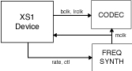

A media clock controls the rate at which information is passed to an external media playing device. For example, an audio sample clock that governs the rate at which samples should be passed to an audio CODEC. An XMOS AVB endpoint can keep track of several media clocks.
A media clock can be synchronized to one of three sources:
- An incoming clock signal on a port.
- The rate of the incoming samples (provided by the IEEE P1722 timestamps) on an incoming IEEE P1722 audio stream.
- The global PTP clock.
A hardware interface can be tied to a particular media clock, allowing the media output from the XMOS device to be synchronized with other devices on the network.
All media clocks are maintained by the media clock server component. This component takes one thread of processing and maintains the current state of all the media clocks in the system. It then periodically updates other components with clock change information to keep the system synchronized. The set of media clocks is determined by an array passed to the server at startup.
The media clock server component also receives information from the audio listener component to track timing information of incoming IEEE P1722 streams. It then sends control information back to ensure the listening component honors the presentation time of the incoming stream.
A high quality, low jitter master clock, which is required to drive an audio CODEC, must be synchronized with an AVB media clock. The XS1 chip cannot provide this clock directly but can provide a lower frequency source for a frequency synthesizer chip or external PLL chip. The frequency synthesizer chip must be able to generate a high frequency clock based on a lower frequency signal (e.g a chip such as the Cirrus Logic CS2300 or similar). The recommended configuration is as in the block diagram below:
The XS1 device provides control to the frequency synthesizer (which is often a divided down clock to drive the higher required rate) and the frequency synthesizer provides the master clock to the CODEC. The sample bit clocks and word clocks are then provided to the CODEC by the XS1 device.
To drive an external clock generator requires one thread connected to the media clock server. See src/audio/media_clocks/external for details.